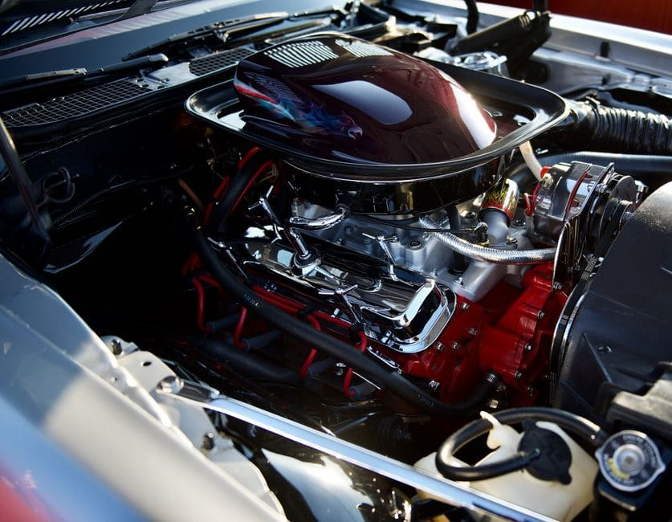

Winnipeg homeowners know all too well how fast a minor eavestrough problem can turn catastrophic. One severe thunderstorm rolling in off the prairies, a late-season ice dam building up along a River Heights bungalow, or a spring melt hitting a Transcona split-level all at once — and suddenly a sagging, cracked, or completely detached eavestrough system is no longer a "get to it eventually" item on your home maintenance list. It becomes an emergency. If water is sheeting down your foundation, pooling against your basement walls, or soaking into your soffit and fascia, you need to understand your options for professional eavestrough installation in Winnipeg — and you need to understand them now.

Why Winnipeg's Climate Creates Eavestrough Emergencies
No Canadian city puts gutters through quite the same punishment as Winnipeg. The temperature swings here are among the most dramatic on the continent — winters that regularly plunge to -30 C or colder, followed by springs where temperatures can climb 40 degrees in a matter of weeks. That relentless freeze-thaw cycle forces water into every small crack in your existing eavestrough, expanding and contracting until joints separate, hangers pull away from fascia boards, and seams split open. By the time the snow is off the roof, many Winnipeg homeowners discover their gutters are essentially beyond repair.
Summer brings its own threats. The city sits in a region prone to intense convective thunderstorms, particularly from June through August. A severe hail event — and the North End, St. Vital, and Sage Creek areas have all seen significant hail events in recent years — can dent and crack vinyl and aluminum gutters badly enough that they no longer channel water away from your home properly. When the next major rainstorm arrives, water overflows the damaged sections directly onto your foundation.
Signs You Need Emergency Eavestrough Installation, Not Just a Repair
A repair is appropriate when the underlying structure is sound. Emergency installation is necessary when:
- Sections of eavestrough have physically detached from the fascia and are hanging or have fallen entirely
- The fascia boards behind the gutters are rotted, soft, or crumbling — indicating there is no longer a solid surface to anchor repaired gutters
- Multiple joints are failing simultaneously, causing water to pour from several locations along the roofline
- Water is visibly entering your basement or crawl space during rainfall and the overflow path leads directly from failed gutters
- Your existing system is an older style that no longer meets the drainage needs of your roof pitch and catchment area
In these situations, patching individual sections is a short-term solution that costs you money without solving the problem. A full eavestrough installation winnipeg contractors can complete in a single visit gives you a continuous, properly sloped, sealed system that actually protects your home.
What Emergency Eavestrough Installation Costs in Winnipeg
Pricing varies based on linear footage, material, profile style, and whether fascia replacement is also required. The table below reflects typical Winnipeg-area ranges as of 2026.
| Scope of Work | Estimated Cost Range | Notes |
|---|---|---|
| Standard aluminum 5" K-style, full house (avg. bungalow) | $900 – $1,800 | Most common choice in Winnipeg neighbourhoods |
| Seamless aluminum, custom-formed on site | $1,200 – $2,500 | Fewer leak points; preferred for older homes |
| Oversized 6" K-style (larger roof catchment areas) | $1,500 – $3,000 | Common on two-storey homes in Linden Woods, Bridgwater |
| Fascia board replacement (add-on) | $8 – $18 per linear foot | Often necessary on homes 20+ years old |
| Emergency / priority scheduling surcharge | $75 – $200 | Applies when same-day or next-day service is required |
Choosing the Right Material for Manitoba Conditions
Aluminum is by far the dominant material for eavestrough installation in Winnipeg, and for good reason. It holds up to the freeze-thaw cycle far better than vinyl, which can become brittle and crack at the extreme cold temperatures Manitoba winters routinely deliver. Seamless aluminum — formed from a single continuous roll by a machine brought to your property — eliminates the sectional joints that are the most common failure point. For homeowners in older Wolseley or Osborne Village character homes where aesthetics matter, painted aluminum can be matched to period-appropriate colours without sacrificing performance.
Steel gutters are occasionally specified for very large commercial properties but are rarely necessary on Winnipeg residential homes. Copper is a premium option used on heritage properties but comes at three to five times the cost of aluminum.
The Foundation Risk You Cannot Afford to Ignore
Winnipeg is built largely on clay-heavy Red River gully soil that expands when wet and contracts when dry. When eavestrough systems fail and water is allowed to saturate the soil directly against your foundation, that swelling and shrinking puts lateral pressure on your basement walls. Over one or two seasons, this can cause cracking, bowing, and serious structural issues — repairs that can run into the tens of thousands of dollars. The cost of a prompt eavestrough installation is modest compared to a foundation repair or waterproofing project.
What Happens During a Professional Installation Visit
A qualified Winnipeg eavestrough contractor will begin with an assessment of your fascia condition before any new material goes up. They will calculate the correct slope — typically a quarter-inch drop for every ten feet of run — to ensure water moves consistently toward downspouts rather than pooling. Downspout placement matters enormously on Winnipeg lots: extensions must direct water well away from your foundation and ideally toward the street or a graded swale. After installation, the crew will run a water test to confirm drainage and check all seams and end caps before leaving your property.
Need Eavestrough Installation in Winnipeg Fast?
Get a free, no-obligation quote from a local Winnipeg eavestrough specialist and protect your home before the next storm hits.
Get My Free Quote